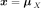
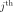
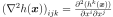
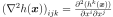

TaylorExpansionMoments¶
- class TaylorExpansionMoments(*args)¶
First and second order Taylor expansion formulas.
Refer to Taylor decomposition importance factors.
- Parameters
- limitStateVariable
RandomVector It must be of type Composite, which means it must have been defined with the class
CompositeRandomVector.
- limitStateVariable
Notes
In a probabilistic approach the Taylor expansion can be used propagate the uncertainties of the input variables
 through the
model
through the
model  towards the output variables
towards the output variables  . It enables to access
the central dispersion (Expectation, Variance) of the output variables.
. It enables to access
the central dispersion (Expectation, Variance) of the output variables.This method is based on a Taylor decomposition of the output variable
towards the random vectors around the mean point
 . Depending on the order of the Taylor decomposition (classically
first order or second order), one can obtain different formulas introduced
hereafter.
. Depending on the order of the Taylor decomposition (classically
first order or second order), one can obtain different formulas introduced
hereafter.As , the Taylor decomposition around  at the second order yields to:
where:
 is the vector of the input variables at the mean
values of each component.
is the vector of the input variables at the mean
values of each component. is the covariance matrix of the random vector uX. The
elements are the followings :
is the covariance matrix of the random vector uX. The
elements are the followings :

is the transposed Jacobian matrix with
 and
and
 .
.is a tensor of order 3. It is composed by the second order derivative towards the and  components of
 of the
component of the output vector
of the
component of the output vector  . It
yields to:

. It
yields to:

Approximation at the order 1:
Expectation:
Pay attention that
 is a vector. The
component of this vector is equal to the component of the
output vector computed by the model at the mean value.
is thus the computation of the model at mean.
is a vector. The
component of this vector is equal to the component of the
output vector computed by the model at the mean value.
is thus the computation of the model at mean.Variance:
Approximation at the order 2:
Expectation:
Variance:
The decomposition of the variance at the order 2 is not implemented. It requires both the knowledge of higher order derivatives of the model and the knowledge of moments of order strictly greater than 2 of the PDF.
Examples
>>> import openturns as ot >>> ot.RandomGenerator.SetSeed(0) >>> myFunc = ot.SymbolicFunction(['x1', 'x2', 'x3', 'x4'], ... ['(x1*x1+x2^3*x1)/(2*x3*x3+x4^4+1)', 'cos(x2*x2+x4)/(x1*x1+1+x3^4)']) >>> R = ot.CorrelationMatrix(4) >>> for i in range(4): ... R[i, i - 1] = 0.25 >>> distribution = ot.Normal([0.2]*4, [0.1, 0.2, 0.3, 0.4], R) >>> # We create a distribution-based RandomVector >>> X = ot.RandomVector(distribution) >>> # We create a composite RandomVector Y from X and myFunc >>> Y = ot.CompositeRandomVector(myFunc, X) >>> # We create a Taylor expansion method to approximate moments >>> myTaylorExpansionMoments = ot.TaylorExpansionMoments(Y) >>> print(myTaylorExpansionMoments.getMeanFirstOrder()) [0.0384615,0.932544]
Methods
Draw the importance factors.
Accessor to the object's name.
Get the approximation at the first order of the covariance matrix.
Get the gradient of the function.
Get the hessian of the function.
getId()Accessor to the object's id.
Get the importance factors.
Get the limit state variable.
Get the approximation at the first order of the mean.
Get the approximation at the second order of the mean.
getName()Accessor to the object's name.
Accessor to the object's shadowed id.
Get the value of the function.
Accessor to the object's visibility state.
hasName()Test if the object is named.
Test if the object has a distinguishable name.
setName(name)Accessor to the object's name.
setShadowedId(id)Accessor to the object's shadowed id.
setVisibility(visible)Accessor to the object's visibility state.
- __init__(*args)¶
- drawImportanceFactors()¶
Draw the importance factors.
- Returns
- graph
Graph Graph containing the pie corresponding to the importance factors of the probabilistic variables.
- graph
- getClassName()¶
Accessor to the object’s name.
- Returns
- class_namestr
The object class name (object.__class__.__name__).
- getCovariance()¶
Get the approximation at the first order of the covariance matrix.
- Returns
- covariance
CovarianceMatrix Approximation at the first order of the covariance matrix of the random vector.
- covariance
- getGradientAtMean()¶
Get the gradient of the function.
- Returns
- gradient
Matrix Gradient of the Function which defines the random vector at the mean point of the input random vector.
- gradient
- getHessianAtMean()¶
Get the hessian of the function.
- Returns
- hessian
SymmetricTensor Hessian of the Function which defines the random vector at the mean point of the input random vector.
- hessian
- getId()¶
Accessor to the object’s id.
- Returns
- idint
Internal unique identifier.
- getImportanceFactors()¶
Get the importance factors.
- Returns
- factors
Point Importance factors of the inputs : only when randVect is of dimension 1.
- factors
- getLimitStateVariable()¶
Get the limit state variable.
- Returns
- limitStateVariable
RandomVector Limit state variable.
- limitStateVariable
- getMeanFirstOrder()¶
Get the approximation at the first order of the mean.
- Returns
- mean
Point Approximation at the first order of the mean of the random vector.
- mean
- getMeanSecondOrder()¶
Get the approximation at the second order of the mean.
- Returns
- mean
Point Approximation at the second order of the mean of the random vector (it requires that the hessian of the Function has been defined).
- mean
- getName()¶
Accessor to the object’s name.
- Returns
- namestr
The name of the object.
- getShadowedId()¶
Accessor to the object’s shadowed id.
- Returns
- idint
Internal unique identifier.
- getValueAtMean()¶
Get the value of the function.
- Returns
- value
Point Value of the Function which defines the random vector at the mean point of the input random vector.
- value
- getVisibility()¶
Accessor to the object’s visibility state.
- Returns
- visiblebool
Visibility flag.
- hasName()¶
Test if the object is named.
- Returns
- hasNamebool
True if the name is not empty.
- hasVisibleName()¶
Test if the object has a distinguishable name.
- Returns
- hasVisibleNamebool
True if the name is not empty and not the default one.
- setName(name)¶
Accessor to the object’s name.
- Parameters
- namestr
The name of the object.
- setShadowedId(id)¶
Accessor to the object’s shadowed id.
- Parameters
- idint
Internal unique identifier.
- setVisibility(visible)¶
Accessor to the object’s visibility state.
- Parameters
- visiblebool
Visibility flag.